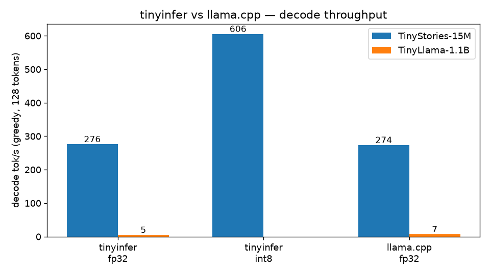
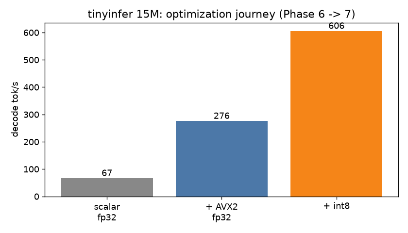

No frameworks. No copied code. Hand-rolled safetensors loader, BPE tokenizer, AVX2 kernels, int8 quantization — benchmarked honestly against llama.cpp.
Real captured output from tinyinfer generating with the
TinyStories-15M model, int8 quantized. This is an exact replay of a terminal session.
2-core VM, AVX2+FMA, g++ -O3 -march=native. Median of 3 runs,
15-token prompt, 128 generated tokens, greedy. llama.cpp at rev 2b129cc, F32 GGUF.
| Model | Engine | Precision | Decode tok/s |
|---|---|---|---|
| TinyStories-15M | tinyinfer | fp32 | 276 |
| TinyStories-15M | tinyinfer | int8 | 606 |
| TinyStories-15M | llama.cpp | fp32 | 274 |
| TinyLlama-1.1B | tinyinfer | fp32 | 5.1 |
| TinyLlama-1.1B | llama.cpp | fp32 | 6.9 |


fp32 PPL 6260.2 → int8 PPL 6199.8 (−1.0%, noise).
The 2.19× int8 speedup costs nothing measurable in quality.
Layer-by-layer parity with Hugging Face within 1e-4;
greedy generation token-identical to PyTorch; tokenizer byte-exact on 21/21 strings.
One matvec per weight matrix per decode step — decode is memory-bandwidth bound, so the whole design is about streaming weights as fast as possible.
Hand-written safetensors parser over mmap — near-instant startup, zero dependencies.
Per-row symmetric int8 at load time. Weights shrink 4×; the AVX2 kernel widens on the fly.
Hand-written AVX2/FMA matvec with 4-way unrolled accumulators. OpenMP only on the 32k-row lm_head — threading smaller mats measured slower.
Every kernel has a scalar reference + differential test vs NumPy/HF before optimization. The fast path never diverges from the tested path.
Benchmarking against llama.cpp exposed that my AVX2 kernel was latency-bound, not bandwidth-bound: a single accumulator chain against 4–5 cycle FMA latency caps throughput at ~⅛ of peak. Four independent accumulators fixed it — 1.5× on the 1.1B instantly, and int8 went from 1.1× to 2.19×. Without a reference to compare against, 3.4 tok/s would have looked like "the hardware limit."
// 4 independent accumulators hide FMA latency (4-5 cycles); // a single chain caps throughput at ~1/8 of peak. static float dot_avx2(const float* a, const float* b, int n) { __m256 acc0 = _mm256_setzero_ps(), acc1 = _mm256_setzero_ps(); __m256 acc2 = _mm256_setzero_ps(), acc3 = _mm256_setzero_ps(); int j = 0; for (; j + 32 <= n; j += 32) { acc0 = _mm256_fmadd_ps(_mm256_loadu_ps(a + j), _mm256_loadu_ps(b + j), acc0); acc1 = _mm256_fmadd_ps(_mm256_loadu_ps(a + j + 8), _mm256_loadu_ps(b + j + 8), acc1); acc2 = _mm256_fmadd_ps(_mm256_loadu_ps(a + j + 16), _mm256_loadu_ps(b + j + 16), acc2); acc3 = _mm256_fmadd_ps(_mm256_loadu_ps(a + j + 24), _mm256_loadu_ps(b + j + 24), acc3); } ... }
Honest int8 instead of half-done int4 · OpenMP only where it wins · mmap weights · correctness before speed, always measured.
Q4_0-style blocked quantization · cache-blocked matvec · paged KV cache · speculative decoding.